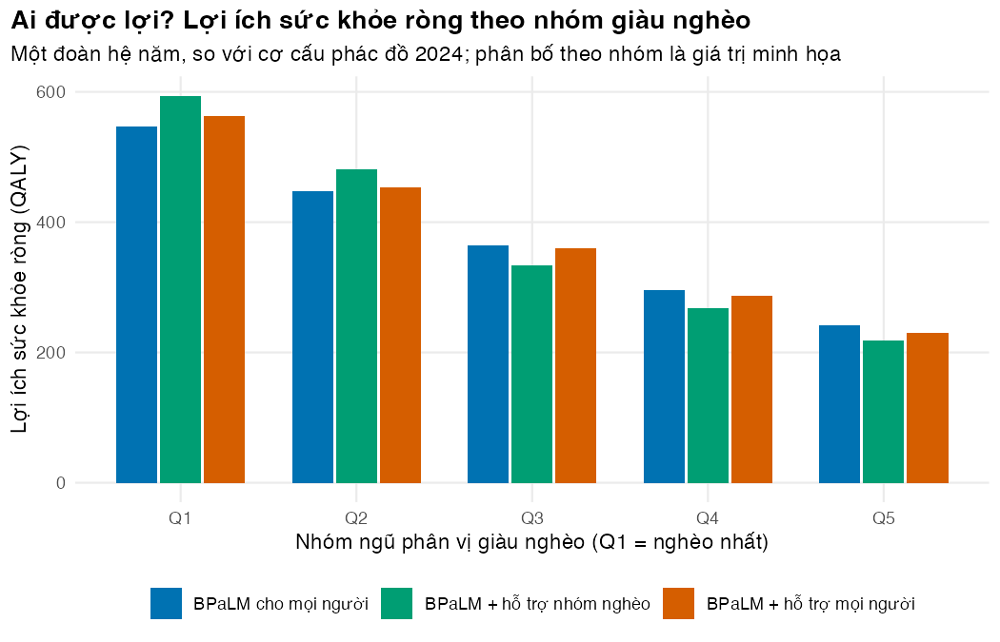
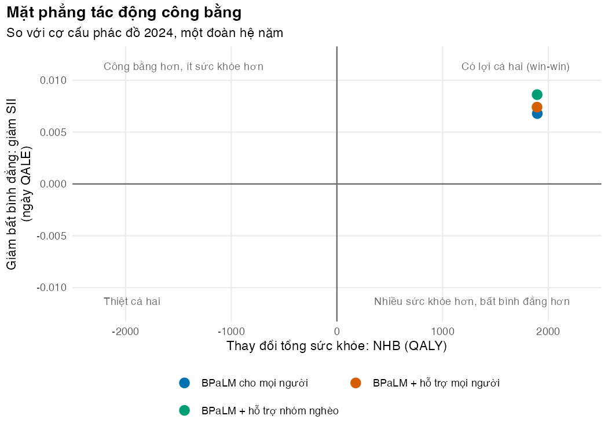
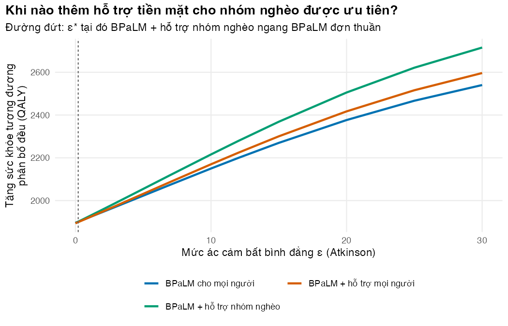

# Vietnamese text in tables and figures needs a UTF-8 locale (Rscript may start in "C")
if (!isTRUE(l10n_info()[["UTF-8"]])) invisible(Sys.setlocale("LC_CTYPE", "en_US.UTF-8"))
source("../_shared/R/helpers.R")
source("../_shared/R/vn_data.R")
source("../m02-cohort-markov/code/model.R")
source("code/model.R")
library(ggplot2)
p02 <- m02_params("../m02-cohort-markov/params/mdrtb.csv")
pb <- read_params("params/bia.csv")
pe <- read_params("params/equity.csv")
ctx <- vn_context()
n_patients <- sum(current_counts(pb)) # one annual cohort starting treatment (2024 size)
mix <- current_mix(pb) # 2024 regimen mix = the comparator "now"
k <- ctx$wtp_low # health opportunity cost: 0.5 x GDP per capita per QALY
pop <- ctx$population
h0 <- quintile_vector(pe, "qale_q") # baseline QALE by wealth quintile (illustrative)
stopifnot(abs(sum(quintile_vector(pe, "share_case_q")) - 1) < 1e-9,
abs(sum(quintile_vector(pe, "share_oc_q")) - 1) < 1e-9)
# Grid of inequality-aversion values (epsilon) for the trade-off analysis (an analysis choice)
eps_grid <- c(0, 0.25, 0.5, 1, 2, 3, 5, 7, 10, 12, 15, 20, 25, 30)Bài 2: Phân tích chi phí-hiệu quả theo phân phối (DCEA)
Ước tính ai được lợi, ai chịu chi phí cơ hội, và đánh đổi giữa tổng sức khỏe với công bằng
Vì sao bạn nên quan tâm?
Ở một điểm điều trị có giám sát trực tiếp (DOT) tại trạm y tế xã, người bệnh lao kháng thuốc đến uống thuốc gần như mỗi ngày; với một người làm thuê theo ngày, mỗi lần đi là một buổi mất công. Kế hoạch năm 2025 của Chương trình Chống lao dự trù 13.1 triệu USD cho hỗ trợ người bệnh lao, nhưng tại thời điểm báo cáo cho WHO, chỉ 2.6% số đó đã xác định được nguồn tài trợ (World Health Organization 2026b). Một khoản hỗ trợ 1,000,000 VNĐ mỗi tháng (giá trị minh họa) bằng 27% lương tối thiểu vùng IV (Chính phủ 2025), tức khoảng 25 bát phở (Nhadautu.vn 2025). Với ít tiền như vậy, nên hỗ trợ mọi người bệnh hay chỉ người nghèo? Bài này cho bạn cách trả lời bằng con số, và tách rõ phần nào là phán đoán giá trị.
Mục tiêu học tập
Sau bài này, bạn có thể:
- Giải thích vì sao phân tích chi phí-hiệu quả (CEA) thông thường không nói gì về phân bố lợi ích, và mô tả hai giai đoạn của phân tích chi phí-hiệu quả theo phân phối (distributional cost-effectiveness analysis, DCEA).
- Tính lợi ích sức khỏe ròng (net health benefit, NHB) theo nhóm ngũ phân vị giàu nghèo, gồm cả phần chi phí cơ hội sức khỏe mà mỗi nhóm gánh.
- Tính khoảng cách tuyệt đối, khoảng cách tương đối, chỉ số độ dốc bất bình đẳng (SII), chỉ số Atkinson và sức khỏe tương đương phân bố đều (EDE).
- Vẽ mặt phẳng tác động công bằng và tìm mức ác cảm bất bình đẳng ε* làm đổi thứ hạng hai chiến lược.
Ý chính
- CEA cộng mọi năm sống điều chỉnh theo chất lượng (QALY) như nhau, bất kể ai nhận. DCEA hỏi thêm: lợi ích và chi phí cơ hội phân bố ra sao giữa các nhóm xã hội (Asaria, Griffin, và Cookson 2016).
- DCEA có hai giai đoạn: (1) mô hình hóa phân bố sức khỏe theo nhóm, (2) đánh giá phân bố đó bằng chỉ số bất bình đẳng và hàm phúc lợi xã hội.
- Lợi ích theo nhóm phụ thuộc vào ai mắc bệnh, ai tiếp cận và tuân thủ, ai hưởng lợi nhiều hơn, và ai chịu chi phí cơ hội khi tiền bị rút khỏi dịch vụ khác (Cookson và c.s. 2017).
- NHB của nhóm \(g\) = QALY tăng thêm của nhóm \(g\) − phần chi phí cơ hội sức khỏe nhóm \(g\) gánh.
- Mặt phẳng tác động công bằng (equity impact plane) đặt thay đổi tổng sức khỏe trên trục hoành, thay đổi bất bình đẳng trên trục tung; góc phần tư cho biết có buộc phải đánh đổi hay không.
- Chỉ số độ dốc (SII) là thước đo tuyệt đối (đơn vị là năm tuổi thọ điều chỉnh theo chất lượng, QALE); chỉ số Atkinson là thước đo tương đối, có tham số ε (ác cảm bất bình đẳng). ε = 0 là CEA thông thường; ε càng lớn, sức khỏe của nhóm kém nhất càng được coi trọng (Atkinson 1970).
- Tìm ε* làm đổi thứ hạng thay vì áp một ε duy nhất. Người ra quyết định tự hỏi: mình có quan tâm công bằng đến mức đó không?
Nội dung
Vì sao CEA chưa đủ
M02 cho thấy BPaLM tạo thêm QALY và tiết kiệm tiền cho mỗi người bệnh. Nhưng người bệnh lao kháng thuốc không phân bố đều trong dân số, và hỗ trợ đi kèm (tiền mặt, dinh dưỡng, chi phí đi lại) có thể được nhắm vào nhóm nghèo. CEA chỉ trả lời “phương án nào tạo nhiều sức khỏe nhất”. DCEA trả lời thêm “phương án nào thu hẹp khoảng cách sức khỏe giữa người giàu và người nghèo, và phải đổi bao nhiêu sức khỏe để có điều đó” (Cookson và c.s. 2017, 2021).
Phân biệt hai khái niệm: bất bình đẳng sức khỏe (health inequality) là khác biệt đo được giữa các nhóm; bất công là phán đoán giá trị rằng khác biệt đó không công bằng. DCEA đo cái thứ nhất và để người ra quyết định nói về cái thứ hai qua tham số ε.
Giai đoạn 1: mô hình hóa phân bố sức khỏe
Chia dân số thành năm nhóm ngũ phân vị giàu nghèo \(g = 1, \dots, 5\) (Q1 nghèo nhất). Với mỗi chiến lược so với cơ cấu phác đồ hiện tại, một đoàn hệ năm có \(n_g\) người bệnh ở nhóm \(g\):
\[ \Delta Q_g = n_g \, \Delta q_g, \qquad \Delta C = \sum_g n_g \, \Delta c_g, \qquad \text{NHB}_g = \Delta Q_g - s_g \frac{\Delta C}{k}, \]
trong đó \(\Delta q_g, \Delta c_g\) là QALY và chi phí tăng thêm mỗi người bệnh (từ M02), \(k\) là chi phí để hệ thống y tế tạo ra một QALY ở nơi khác (ngưỡng chi phí cơ hội sức khỏe), và \(s_g\) là tỷ lệ chi phí cơ hội rơi vào nhóm \(g\). Ở các nước thu nhập thấp và trung bình, ngưỡng phản ánh chi phí cơ hội sức khỏe thường thấp hơn các ngưỡng dựa trên GDP (Ochalek, Lomas, và Claxton 2018; Woods và c.s. 2016); xem M01 Bài 4. Ở đây \(k\) là ngưỡng thấp chung của khóa học, 62,750,000 VNĐ/QALY, bằng 0.5 × GDP bình quân đầu người (Cục Thống kê (Bộ Tài chính) 2026a). Khi chiến lược tiết kiệm tiền (\(\Delta C < 0\)), chi phí cơ hội mang dấu âm: tiền tiết kiệm được dùng cho dịch vụ khác và sinh thêm sức khỏe.
Sức khỏe nền của mỗi nhóm là tuổi thọ điều chỉnh theo chất lượng lúc sinh (quality-adjusted life expectancy, QALE) \(h^0_g\), ở đây từ 61.0 (Q1) đến 69.0 QALY (Q5), đều là giá trị minh họa; trung bình của chúng ứng với thỏa dụng bình quân khoảng 0.87 trên tuổi thọ lúc sinh 74.7 năm (Cục Thống kê (Bộ Tài chính) 2026b). Sau can thiệp, \(h^1_g = h^0_g + \text{NHB}_g / P_g\) với \(P_g\) là dân số của nhóm (một phần năm của 102.3 triệu dân).
Ba giả định cần nói rõ. (1) Cách cộng lợi ích trọn đời của một đoàn hệ vào QALE của cả nhóm là một xấp xỉ, và NHB có chiết khấu được cộng vào QALE không chiết khấu; đủ để so sánh các chiến lược, không đủ để dự báo QALE. (2) Tiền hỗ trợ được tính vào ngân sách y tế, nên nó cũng tạo chi phí cơ hội. Nếu ngành lao động-xã hội hay một quỹ từ thiện chi khoản này từ ngân sách riêng, phần chi phí cơ hội đó biến mất và hỗ trợ trông có lợi hơn (Hoa và Nhung 2019). (3) Phân bố chi phí cơ hội \(s_g\) là một phán đoán; bài tập 1 cho thấy nó đổi kết luận về công bằng.
Giai đoạn 2: đánh giá phân bố
Bốn cách tóm tắt bất bình đẳng của vectơ \(h\):
| Chỉ số | Công thức | Ý nghĩa |
|---|---|---|
| Khoảng cách tuyệt đối | \(h_5 - h_1\) | chỉ nhìn hai nhóm đầu–cuối |
| Khoảng cách tương đối | \(h_5 / h_1\) | như trên, theo tỷ số |
| Chỉ số độ dốc (SII) | độ dốc hồi quy \(h_g\) theo thứ hạng trung điểm của nhóm | dùng cả năm nhóm |
| Atkinson | \(A_\varepsilon = 1 - \text{EDE}_\varepsilon / \bar h\) | có tham số giá trị ε |
Sức khỏe tương đương phân bố đều (equally distributed equivalent, EDE) là mức sức khỏe mà, nếu mọi người cùng có, xã hội thấy tốt ngang phân bố hiện tại (Atkinson 1970):
\[ \text{EDE}_\varepsilon = \Big( \frac{1}{G} \sum_g h_g^{\,1-\varepsilon} \Big)^{1/(1-\varepsilon)}, \qquad \text{EDE}_1 = \exp\Big(\frac{1}{G}\sum_g \ln h_g\Big). \]
Với ε = 0, EDE là trung bình; khi ε tăng, EDE tiến dần về sức khỏe của nhóm kém nhất. SII và khoảng cách \(h_5 - h_1\) là thước đo tuyệt đối (một năm QALE thêm cho mọi người không đổi chúng), còn chỉ số Atkinson là thước đo tương đối (cộng cùng số năm cho mọi nhóm làm nó giảm). Hai loại có thể cho kết luận khác nhau về cùng một chính sách; họ hàng tuyệt đối của EDE là chỉ số Kolm. Bài này dùng SII cho mặt phẳng và Atkinson cho ε*. Thay đổi EDE nhân dân số là “QALY có trọng số công bằng”; với thay đổi nhỏ, một QALY đến Q1 được tính bằng \((h_1/h_5)^{-\varepsilon}\) QALY đến Q5.
Mặt phẳng tác động công bằng và phân tích đánh đổi
Đặt mỗi chiến lược lên mặt phẳng: trục hoành là tổng NHB, trục tung là mức giảm bất bình đẳng (ở đây là mức giảm SII). Góc trên bên phải là “có lợi cả hai”: không cần đánh đổi. Hai góc chéo là đánh đổi thật (Cookson và c.s. 2017). Khi hai chiến lược đều nằm trong góc “có lợi cả hai” nhưng một cái nhiều sức khỏe hơn, cái kia công bằng hơn, ta tìm ε* tại đó hai chiến lược có cùng mức tăng EDE. Dawkins và cộng sự dùng đúng cách này cho vắc xin rotavirus ở Ethiopia, rồi diễn giải ε* thành tỷ số trọng số giữa nhóm nghèo nhất và giàu nhất (Dawkins và c.s. 2018).
Ba chiến lược trong ví dụ
So sánh với cơ cấu phác đồ năm 2024 (33% dài hạn, 42% ngắn 9 tháng, 25% BPaLM (World Health Organization 2026a)): (1) BPaLM cho mọi người bệnh; (2) BPaLM kèm hỗ trợ tiền mặt 1,000,000 VNĐ mỗi tháng điều trị cho người bệnh thuộc 2 nhóm nghèo nhất; (3) BPaLM kèm hỗ trợ cho mọi người bệnh. “Mọi người bệnh” là cận trên; Bài 1 tính tỷ lệ đủ điều kiện và tỷ lệ áp dụng thực tế. Mức hỗ trợ là giá trị minh họa: chưa tìm được mức công khai cho người bệnh lao kháng thuốc ở Việt Nam (Center for Supporting Community Development Initiatives (SCDI) 2024). Hiệu quả của hỗ trợ lấy từ một phân tích gộp ở các nước thu nhập thấp và trung bình: hỗ trợ tiền mặt cho người bệnh lao có tỷ số chênh của kết cục điều trị tốt là 1.77 (KTC 95%: 1.57–2.01) (Richterman và c.s. 2018). Các nghiên cứu chủ yếu ở lao nhạy thuốc, và ta giả định toàn bộ lợi ích đến từ giảm bỏ điều trị (lost to follow-up) (apply_support()). Phân bố người bệnh, sức khỏe nền và chi phí cơ hội theo nhóm là giá trị minh họa; chưa có số liệu công bố cho Việt Nam.
Thực hành
Nạp hàm, tham số và các giá trị chung; một đoàn hệ năm là 3,050 người bệnh, như năm 2024. Kiểm tra: tỷ lệ người bệnh và tỷ lệ chi phí cơ hội theo nhóm đều cộng bằng 1 (stopifnot).
Lấy chi phí và QALY có chiết khấu mỗi người bệnh từ M02 cho từng “loại người bệnh”, rồi so với cơ cấu hiện tại. Kiểm tra: BPaLM rẻ hơn và tốt hơn cơ cấu hiện tại; hỗ trợ làm tăng cả QALY lẫn chi phí so với BPaLM đơn thuần.
# Per-patient discounted costs and QALYs from M02 for each patient type, versus the 2024 mix
pp <- patient_outcomes(p02, pe, mix)
types <- c("now", "long", "short", "bpalm", "bpalm_cash")
per_pat <- data.frame(
cost_million = pp[types, "cost"] / 1e6,
qaly = pp[types, "qaly"],
d_cost_million = (pp[types, "cost"] - pp["now", "cost"]) / 1e6,
d_qaly = pp[types, "qaly"] - pp["now", "qaly"],
row.names = TYPE_LABELS[types]
)
# Net health benefit per patient versus the current mix: dQ - dC / k
per_pat$nhb <- per_pat$d_qaly - per_pat$d_cost_million * 1e6 / k
round(per_pat, 3) cost_million qaly d_cost_million d_qaly nhb
Cơ cấu hiện tại (2024) 22.581 12.889 0.000 0.000 0.000
Phác đồ dài hạn 29.316 12.489 6.734 -0.399 -0.507
Phác đồ ngắn 9 tháng 21.694 12.911 -0.887 0.022 0.036
BPaLM 15.017 13.390 -7.565 0.501 0.622
BPaLM + hỗ trợ tiền mặt 20.826 13.482 -1.755 0.593 0.621stopifnot(pp["bpalm_cash", "qaly"] > pp["bpalm", "qaly"], pp["bpalm_cash", "cost"] > pp["bpalm", "cost"],
pp["bpalm", "cost"] < pp["now", "cost"], pp["bpalm", "qaly"] > pp["now", "qaly"])
# Value of support alone (BPaLM + cash versus BPaLM): ICER in VND per QALY
icer_cash <- (pp["bpalm_cash", "cost"] - pp["bpalm", "cost"]) / (pp["bpalm_cash", "qaly"] - pp["bpalm", "qaly"])
round(c(icer_cash = icer_cash, k = k, wtp = ctx$wtp))icer_cash k wtp
63287995 62750000 125500000 # Why support adds little to BPaLM: it can only act through loss to follow-up, which is
# already rare with BPaLM. Share lost to follow-up during the first treatment episode:
ltfu <- sapply(attr(pp, "paths")[c("long", "short", "bpalm")],
function(d) sum(d$prob[d$exit == "LTFU"]))
round(ltfu, 3) long short bpalm
0.158 0.113 0.040 stopifnot(abs(sum(attr(pp, "paths")$bpalm$prob) - 1) < 1e-9)Riêng phần hỗ trợ tiền mặt (so với BPaLM đơn thuần) có ICER khoảng 63.3 triệu VNĐ/QALY, cao hơn ngưỡng chi phí cơ hội \(k\) = 62.75 triệu VNĐ/QALY và thấp hơn ngưỡng cơ sở của khóa học, 1 × GDP bình quân đầu người (125.50 triệu VNĐ/QALY). Ở ngưỡng chi phí cơ hội, hỗ trợ gần như hòa vốn: QALY nó tạo ra xấp xỉ QALY mà khoản tiền đó tạo ra ở nơi khác. Vì vậy câu hỏi về công bằng mới quyết định. Lý do: hỗ trợ chỉ cải thiện kết cục qua việc giảm bỏ điều trị, mà với BPaLM chỉ 4% người bệnh bỏ điều trị trong đợt đầu (phác đồ ngắn 9 tháng: 11%), nên hỗ trợ còn ít thứ để cải thiện.
Mô tả phân bố sức khỏe nền bằng bốn chỉ số. Kiểm tra: SII dương (nhóm giàu khỏe hơn) và chỉ số Atkinson tăng khi ε tăng.
# Baseline distribution of health and four ways to summarise its inequality
base_ineq <- c(
gap_abs = h0[["Q5"]] - h0[["Q1"]],
gap_rel = h0[["Q5"]] / h0[["Q1"]],
sii = sii(h0),
atkinson_1 = atkinson_index(h0, 1),
atkinson_10 = atkinson_index(h0, 10)
)
round(base_ineq, 4) gap_abs gap_rel sii atkinson_1 atkinson_10
8.0000 1.1311 9.7500 0.0009 0.0092 stopifnot(sii(h0) > 0, atkinson_index(h0, 10) > atkinson_index(h0, 1))Tính NHB theo nhóm cho từng chiến lược. Kiểm tra độc lập: khi chiến lược không tốn thêm tiền thì không có chi phí cơ hội và NHB bằng QALY tăng thêm; tổng chi phí cơ hội của BPaLM khớp với chi phí tăng thêm mỗi người bệnh của M02 chia \(k\); và các nhận xét về Q1 và về hỗ trợ có mục tiêu ở dưới đều đúng (stopifnot).
# Who gains and who bears the opportunity cost, for each strategy versus the current mix
strat <- c("bpalm", "bpalm_target", "bpalm_all")
dist <- list()
for (s in strat) dist[[s]] <- dcea_distribution(pp, pe, n_patients, s, k)
# Independent checks. (1) If a strategy costs nothing extra, there is no opportunity
# cost and NHB must equal the QALYs gained. (2) The opportunity costs of BPaLM must sum to
# the whole cohort's net extra cost per patient (from M02) divided by k.
pp_free <- pp
pp_free$cost <- pp["now", "cost"]
d_free <- dcea_distribution(pp_free, pe, n_patients, "bpalm_all", k)
stopifnot(all(abs(d_free$nhb - d_free$d_qaly) < 1e-9))
stopifnot(abs(sum(dist$bpalm$hoc) - n_patients * (pp["bpalm", "cost"] - pp["now", "cost"]) / k) < 1e-6)
nhb_tab <- sapply(dist, function(d) d$nhb)
rownames(nhb_tab) <- QUINTILES
colnames(nhb_tab) <- STRATEGY_LABELS[strat]
knitr::kable(rbind(nhb_tab, "Tổng" = colSums(nhb_tab)), digits = 0,
caption = "Lợi ích sức khỏe ròng (QALY) theo nhóm ngũ phân vị, một đoàn hệ năm")| BPaLM cho mọi người | BPaLM + hỗ trợ nhóm nghèo | BPaLM + hỗ trợ mọi người | |
|---|---|---|---|
| Q1 | 547 | 594 | 563 |
| Q2 | 448 | 481 | 453 |
| Q3 | 364 | 333 | 361 |
| Q4 | 295 | 268 | 287 |
| Q5 | 242 | 218 | 231 |
| Tổng | 1896 | 1895 | 1894 |
# Claims in the text: Q1 gets the largest NHB (it has the most patients); targeted support
# raises NHB in the supported quintiles and lowers it in the others, relative to BPaLM alone
sup_q <- seq_len(pe$n_support_q)
stopifnot(all(apply(nhb_tab, 2, which.max) == 1),
all(dist$bpalm_target$nhb[sup_q] > dist$bpalm$nhb[sup_q]),
all(dist$bpalm_target$nhb[-sup_q] < dist$bpalm$nhb[-sup_q]))nhb_df <- NULL
for (s in strat) {
nhb_df <- rbind(nhb_df, data.frame(quintile = QUINTILES, strategy = STRATEGY_LABELS[[s]],
nhb = dist[[s]]$nhb))
}
nhb_df$strategy <- factor(nhb_df$strategy, levels = STRATEGY_LABELS[strat])
fig_nhb <- ggplot(nhb_df, aes(quintile, nhb, fill = strategy)) +
geom_col(position = position_dodge(width = 0.75), width = 0.7) +
scale_fill_manual(values = pal_course[c(1, 3, 2)], name = NULL) +
labs(x = "Nhóm ngũ phân vị giàu nghèo (Q1 = nghèo nhất)", y = "Lợi ích sức khỏe ròng (QALY)",
title = "Ai được lợi? Lợi ích sức khỏe ròng theo nhóm giàu nghèo",
subtitle = "Một đoàn hệ năm, so với cơ cấu phác đồ 2024; phân bố theo nhóm là giá trị minh họa") +
theme_course()
save_fig(fig_nhb, "l02-nhb-quintile.png")
Q1 nhận nhiều NHB nhất chỉ vì có nhiều người bệnh nhất. Hỗ trợ có mục tiêu tăng NHB ở 2 nhóm nghèo nhất (Q1–Q2), nhưng làm các nhóm còn lại mất một chút so với BPaLM đơn thuần vì họ gánh một phần chi phí cơ hội của khoản hỗ trợ.
Tính tọa độ trên mặt phẳng tác động công bằng: tổng NHB và mức giảm SII. SII là độ dốc của QALE (tính bằng năm) theo thứ hạng 0–1, nên bản thân nó có đơn vị năm QALE; thay đổi rất nhỏ nên ta đổi sang ngày (nhân 365). Kiểm tra: ở ε = 0, mức tăng EDE nhân dân số đúng bằng tổng NHB (stopifnot).
# Equity impact plane: x = total net health benefit, y = reduction in inequality (SII).
# The SII is the slope of QALE (in years) on rank, so it is itself measured in years of QALE;
# changes are tiny, so they are shown in days of QALE (x 365).
summ <- list()
for (s in strat) summ[[s]] <- dcea_summary(dist[[s]], h0, pop, eps_grid)
plane <- data.frame(
strategy = STRATEGY_LABELS[strat],
total_nhb = sapply(summ, function(x) x$total_nhb),
sii_reduction_days = sapply(summ, function(x) -x$d_sii * 365)
)
# At eps = 0 the change in total EDE health equals total NHB (no inequality aversion)
for (s in strat) stopifnot(abs(summ[[s]]$d_ede_total[1] - summ[[s]]$total_nhb) < 1e-4)
knitr::kable(plane, digits = c(0, 1, 4), row.names = FALSE,
col.names = c("Chiến lược", "Tổng NHB (QALY)", "Giảm SII (ngày QALE)"))| Chiến lược | Tổng NHB (QALY) | Giảm SII (ngày QALE) |
|---|---|---|
| BPaLM cho mọi người | 1896.1 | 0.0068 |
| BPaLM + hỗ trợ nhóm nghèo | 1894.8 | 0.0086 |
| BPaLM + hỗ trợ mọi người | 1893.7 | 0.0074 |
# Read by the text below (computed, not typed)
win_win <- all(plane$total_nhb > 0) && all(plane$sii_reduction_days > 0)
best_nhb <- strat[which.max(plane$total_nhb)]
best_sii <- strat[which.max(plane$sii_reduction_days)]
# Does support aimed at the poorest quintiles narrow the gap more than support for everyone?
sii_gain <- stats::setNames(plane$sii_reduction_days, strat)
target_more_equal <- sii_gain[["bpalm_target"]] > sii_gain[["bpalm_all"]]lim_x <- max(abs(plane$total_nhb)) * 1.2
lim_y <- max(abs(plane$sii_reduction_days)) * 1.4
plane$strategy <- factor(plane$strategy, levels = STRATEGY_LABELS[strat])
quad <- data.frame(x = c(1, -1, -1, 1) * lim_x * 0.97, y = c(1, 1, -1, -1) * lim_y * 0.97,
hj = c(1, 0, 0, 1), vj = c(1, 1, 0, 0),
lab = c("Có lợi cả hai (win-win)", "Công bằng hơn, ít sức khỏe hơn",
"Thiệt cả hai", "Nhiều sức khỏe hơn, bất bình đẳng hơn"))
fig_plane <- ggplot(plane, aes(total_nhb, sii_reduction_days)) +
geom_hline(yintercept = 0, colour = "grey40") +
geom_vline(xintercept = 0, colour = "grey40") +
geom_text(data = quad, aes(x, y, label = lab, hjust = hj, vjust = vj),
colour = "grey40", size = 3.2) +
geom_point(aes(colour = strategy), size = 3.5) +
scale_colour_manual(values = pal_course[c(1, 3, 2)], name = NULL) +
coord_cartesian(xlim = c(-lim_x, lim_x), ylim = c(-lim_y, lim_y)) +
labs(x = "Thay đổi tổng sức khỏe: NHB (QALY)", y = "Giảm bất bình đẳng: giảm SII\n(ngày QALE)",
title = "Mặt phẳng tác động công bằng", subtitle = "So với cơ cấu phác đồ 2024, một đoàn hệ năm") +
guides(colour = guide_legend(nrow = 2)) +
theme_course()
save_fig(fig_plane, "l02-equity-plane.png", width = 7, height = 5)
Cả ba chiến lược nằm trong góc “có lợi cả hai”. “BPaLM cho mọi người” cho tổng NHB lớn nhất (1,896 QALY); “BPaLM + hỗ trợ nhóm nghèo” giảm SII nhiều nhất (0.0086 ngày QALE). Các con số bất bình đẳng rất nhỏ vì mỗi năm chỉ khoảng 3,050 người bệnh trong 102.3 triệu dân: một chương trình cho một bệnh hiếm khi dịch chuyển được bất bình đẳng sức khỏe quốc gia.
Phân tích đánh đổi: tính mức tăng EDE (QALY) theo ε, rồi tìm ε* tại đó BPaLM kèm hỗ trợ nhóm nghèo bắt kịp BPaLM đơn thuần. Hàm eps_star_of() trả 0 nếu chiến lược thứ nhất đã hơn ở ε = 0, và NA nếu nó không bắt kịp trong khoảng ε đã xét.
# Equity trade-off: total EDE health gain (QALYs) as inequality aversion eps rises.
# Question: from which eps on does BPaLM + targeted cash beat BPaLM alone?
ede_df <- NULL
for (s in strat) {
ede_df <- rbind(ede_df, data.frame(eps = eps_grid, strategy = STRATEGY_LABELS[[s]],
d_ede = summ[[s]]$d_ede_total))
}
# eps* = the eps at which strategy a and strategy b give the same EDE gain:
# 0 if a is already ahead at eps = 0; NA if a never catches up inside the grid
eps_star_of <- function(dist_a, dist_b) {
gap <- function(e) dcea_summary(dist_a, h0, pop, e)$d_ede_total - dcea_summary(dist_b, h0, pop, e)$d_ede_total
if (gap(0) >= 0) return(0)
if (gap(max(eps_grid)) <= 0) return(NA_real_)
uniroot(gap, c(0, max(eps_grid)))$root
}
eps_star <- eps_star_of(dist$bpalm_target, dist$bpalm)
# Equity weight implied at eps*: a QALY to Q1 counts this many times a QALY to Q5
weight_ratio <- if (is.na(eps_star)) NA else (h0[["Q1"]] / h0[["Q5"]])^(-eps_star)
# Does targeted support beat support for everyone at every eps of the grid?
target_beats_all <- all(summ$bpalm_target$d_ede_total >= summ$bpalm_all$d_ede_total)
round(c(eps_star = eps_star, weight_q1_vs_q5 = weight_ratio, target_beats_all = target_beats_all), 2) eps_star weight_q1_vs_q5 target_beats_all
0.20 1.03 1.00 ede_df$strategy <- factor(ede_df$strategy, levels = STRATEGY_LABELS[strat])
fig_ede <- ggplot(ede_df, aes(eps, d_ede, colour = strategy)) +
geom_line(linewidth = 1) +
scale_colour_manual(values = pal_course[c(1, 3, 2)], name = NULL) +
labs(x = "Mức ác cảm bất bình đẳng ε (Atkinson)",
y = "Tăng sức khỏe tương đương\nphân bố đều (QALY)",
title = "Khi nào thêm hỗ trợ tiền mặt cho nhóm nghèo được ưu tiên?",
subtitle = "Đường đứt: ε* tại đó BPaLM + hỗ trợ nhóm nghèo ngang BPaLM đơn thuần") +
guides(colour = guide_legend(nrow = 2)) +
theme_course()
if (!is.na(eps_star)) fig_ede <- fig_ede + geom_vline(xintercept = eps_star, linetype = "22", colour = "grey40")
save_fig(fig_ede, "l02-ede-epsilon.png")
Hỗ trợ nhóm nghèo được ưu tiên hơn BPaLM đơn thuần khi ε vượt 0.20, tức khi người ra quyết định coi một QALY đến Q1 đáng giá hơn 1.03 QALY đến Q5. Đó là một mức quan tâm công bằng rất nhẹ: vì hỗ trợ gần như hòa vốn về sức khỏe, chỉ cần nghiêng một chút về người nghèo là đủ. Ở mọi ε đã xét, hỗ trợ có mục tiêu đều hơn hỗ trợ mọi người: đưa tiền cho nhóm khá giả tạo ra ít sức khỏe hơn so với dùng khoản tiền đó cho dịch vụ khác, và cũng thu hẹp khoảng cách sức khỏe ít hơn.
Mẹo thực hành
- Báo cáo kết quả theo từng nhóm trước, chỉ số tổng hợp sau. Người ra quyết định hiểu “Q1 được thêm X QALY” nhanh hơn “Atkinson giảm Y”.
- Trình bày một dải ε và ε*, không chọn hộ người ra quyết định một giá trị ε.
- Tách hai nguồn khác biệt: số người bệnh ở mỗi nhóm (nhu cầu) và lợi ích mỗi người bệnh (tiếp cận, tuân thủ). Chỉ nguồn thứ hai mới đổi được bằng chính sách nhắm mục tiêu.
- Khi đưa chi phí cơ hội vào, luôn nói rõ giả định về ai gánh nó (bài tập 1), và ngân sách nào chi tiền hỗ trợ.
Lỗi thường gặp
- Bỏ qua chi phí cơ hội. Chỉ đếm QALY tăng thêm theo nhóm làm mọi chương trình trông có lợi cho mọi nhóm; tiền phải lấy từ đâu đó.
- Dùng khoảng cách Q5 − Q1 làm chỉ số duy nhất. Nó bỏ qua ba nhóm giữa; một chiến lược chỉ giúp Q2 sẽ trông như không có tác dụng.
- Nhầm bất bình đẳng với bất công. Q1 nhận nhiều QALY hơn vì có nhiều người bệnh hơn chưa có nghĩa là chính sách “vì người nghèo”.
- Trình bày giá trị minh họa như số liệu thật. Phân bố người bệnh, QALE và chi phí cơ hội theo nhóm ở đây đều là giá trị minh họa; một DCEA thật cần dữ liệu khảo sát hoặc hồ sơ bệnh án theo nhóm kinh tế-xã hội.
Bài tập
- (Dễ) Giả sử chi phí cơ hội rơi đều vào năm nhóm. Tổng NHB và mức giảm SII của ba chiến lược thay đổi thế nào?
Lời giải
# Exercise 1: opportunity costs shared equally by all quintiles
pe_eq <- pe
for (q in 1:5) pe_eq[[paste0("share_oc_q", q)]] <- 0.2
plane_eq <- sapply(strat, function(s) {
sm <- dcea_summary(dcea_distribution(pp, pe_eq, n_patients, s, k), h0, pop, 0)
c(total_nhb = sm$total_nhb, sii_reduction_days = -sm$d_sii * 365)
})
round(plane_eq, 4) bpalm bpalm_target bpalm_all
total_nhb 1896.0805 1894.7843 1893.6802
sii_reduction_days 0.0061 0.0082 0.0073Tổng NHB không đổi, vì chi phí cơ hội tổng không đổi. Mức giảm SII của BPaLM đổi từ 0.0068 thành 0.0061 ngày QALE. BPaLM tiết kiệm tiền. Khi chi phí cơ hội rơi nhiều hơn vào người nghèo (giả định cơ sở), khoản tiền tiết kiệm được dùng lại ở những dịch vụ có lợi nhiều hơn cho họ; chia đều thì phần lợi thêm này mất đi, nên BPaLM bớt vì người nghèo. Giả định về \(s_g\) có thể đổi kết luận công bằng mà không đổi kết luận hiệu quả.
- (Vừa) Tính chỉ số Atkinson của phân bố nền với ε = 0, 1, 2, 5, 10, 20. Vì sao nó tăng theo ε, và vì sao ở ε = 0 nó bằng 0?
Lời giải
# Exercise 2: the Atkinson index of the baseline distribution rises with eps
round(sapply(c(0, 1, 2, 5, 10, 20), function(e) atkinson_index(h0, e)), 5)[1] 0.00000 0.00091 0.00182 0.00457 0.00916 0.01791Ở ε = 0, EDE bằng trung bình nên \(A_0 = 0\): xã hội không quan tâm phân bố. Khi ε tăng, EDE tiến về sức khỏe của Q1 (61.0), nên khoảng cách giữa trung bình và EDE, tức chỉ số Atkinson, tăng dần.
- (Khó) Nhân đôi mức hỗ trợ tiền mặt (giữ nguyên hiệu quả). BPaLM kèm hỗ trợ nhóm nghèo còn bắt kịp BPaLM đơn thuần không, và ở ε* nào?
Lời giải
# Exercise 3: cash support twice as large (and twice as expensive). Does BPaLM + targeted
# support still beat BPaLM alone at eps = 0, and where is eps* now?
pe_2x <- pe
pe_2x$c_cash_month <- 2 * pe$c_cash_month
pp_2x <- patient_outcomes(p02, pe_2x, mix)
d_t <- dcea_distribution(pp_2x, pe_2x, n_patients, "bpalm_target", k)
d_b <- dcea_distribution(pp_2x, pe_2x, n_patients, "bpalm", k)
eps_star_2x <- eps_star_of(d_t, d_b)
c(nhb_target = sum(d_t$nhb), nhb_bpalm = sum(d_b$nhb), eps_star = eps_star, eps_star_2x = eps_star_2x) nhb_target nhb_bpalm eps_star eps_star_2x
1742.8546749 1896.0805112 0.2048572 NA # The text says a dearer support needs more inequality aversion (eps* rises or disappears)
stopifnot(is.na(eps_star_2x) || (!is.na(eps_star) && eps_star_2x >= eps_star))Với hỗ trợ gấp đôi, ở ε = 0 tổng NHB của hỗ trợ nhóm nghèo là 1,743 QALY so với 1,896 của BPaLM đơn thuần. Trong khoảng ε từ 0 đến 30, hỗ trợ không còn bắt kịp: trả gấp đôi cho cùng một hiệu quả làm chi phí cơ hội vượt xa lợi ích, kể cả khi rất coi trọng người nghèo. Bài học: thiết kế hỗ trợ (bao nhiêu, cho ai) quan trọng không kém việc có hỗ trợ hay không.
Tài liệu tham khảo
Kịch bản video (~15 phút)
| # | Slide | Lời giảng chính | Hình/Code |
|---|---|---|---|
| 1 | Một điểm DOT ở xã | người làm thuê mất công mỗi lần đi; ngân sách hỗ trợ người bệnh gần như chưa có nguồn | callout mở đầu |
| 2 | CEA cộng QALY như nhau | ai nhận không quan trọng → câu hỏi công bằng | — |
| 3 | Hai giai đoạn DCEA | mô hình hóa phân bố; đánh giá phân bố | công thức NHB\(_g\) |
| 4 | Ba chiến lược | so với cơ cấu 2024; BPaLM; hỗ trợ nhóm nghèo; hỗ trợ mọi người; OR từ phân tích gộp | chunk l02-per-patient |
| 5 | Hỗ trợ có đáng tiền không | ICER của riêng hỗ trợ so với ngưỡng chi phí cơ hội | chunk l02-per-patient |
| 6 | Sức khỏe nền | QALE theo nhóm (minh họa); SII; Atkinson | chunk l02-baseline |
| 7 | NHB theo nhóm | Q1 nhiều nhất vì nhiều người bệnh; nhóm khá giả gánh chi phí hỗ trợ | figs/l02-nhb-quintile.png |
| 8 | Mặt phẳng tác động công bằng | bốn góc; vị trí ba chiến lược | figs/l02-equity-plane.png |
| 9 | Tìm ε* | thứ hạng đổi ở ε*; tỷ số trọng số Q1:Q5 | figs/l02-ede-epsilon.png |
| 10 | Lỗi thường gặp | bỏ chi phí cơ hội; chỉ nhìn Q5 − Q1; minh họa ≠ thật | callout |
| 11 | Chuyển tiếp | sức khỏe xong; còn túi tiền của hộ gia đình → Bài 3 | — |